Piste d’Exercice : Analyse d’Action Anticipative pour les Cyclones à Madagascar#
Caractéristiques#
Type d’exercice:
Cet exercice peut être utilisé dans le cadre de formations en ligne ou en présentiel.
Il peut être réalisé en tant qu’exercice guidé ou individuellement en auto-apprentissage.
Temps estimé pour l’exercice
Articles Wiki pertinents
Objectif de l’exercice:
Aina, l’experte GIS (SIG) de la Croix-Rouge malgache (CRM), se prépare pour la prochaine saison des cyclones. Elle souhaite eméliorer la capacité de réaction de son équipe une fois une tempête annoncée, en automatisant des analyses clés dans la application QGIS. Celles-ci incluent l’estimation des populations exposées, l’identification des services impactés comme la santé et l’education, et l’évaluation de l’accessibilité des postes de santé à partir des entrepôts de la croix rouge dans une fenêtre critique de 10 heures. L’objectif est de préparer un workflow d’analyse et de visualisation pour soutenir une action anticipée (eng.: Anticipatory Action) et fondée sur les données, avant que le cyclone ne touche terre.
Instruction pour les formateurs#
Espace Formateurs (Trainers Corner)
Préparer la formation
Prenez du temps pour vous familiariser avec l’exercice et le matériel founi.
Préparez un tableau blanc. Cela peut être un tableau physique, un paperboard (tableau blanc virtuel, e.g., Miro Board) où les participant·es peuvent ajouter leurs observations et questions.
Avant de commencer l’exercice, assurez-vous que tout le monde a installé QGIS et a téléchargé et dézippé le dossier de données.
Consultez How to do trainings? pour des conseils généraux sur la conduite de formations (ce matériel est en anglais).
Animer la formation
Introduction:
Présentez l’idée et l’objectif de l’exercice.
Fournissez le lien de téléchargement et assurez-vous que tout le monde a bien dézippé le dossier avant de commencer les tâches.
Exercice guidée:
Montrez et expliquez chaque étape cous-même au moins deux fois, et suffisamment lentement por que chacun·e puisse voir ce que vous faites et reproduire les étapes dans sons prope projet QGIS.
Assurez-vous que tout le monde suit en demandant régulièrement si quelqu’un a besoid d’aide ou si tout le monde suit toujours.
Soyez ouvert·e et patient·e face aux questions ou problèmes éventuels. Vos participant·es sont en train de faire plusieures choses à la fois: écouter vos instructions tout en s’orientant dans leur propre projet QGIS.
Fin de la formation
Prévoyez du temps à la fin pour répondre aux questions ou aborder les éventuels problèmes rencontrés lors de tâches.
Laissez un moment pour des questions ouvertes.
Données#
Téléchargez toutes les données ici, enregistrez le dossier sur votre ordinateur et dézippez le fichier.
Le dossier s’appelle “ et contient toute la structure de dossier standard avec toutes les données dans le sous-dossier /data/input/ et la documentation supplémentaire dans le dossier /documentation/.
Ensemble de données |
Source |
Descriptions |
|---|---|---|
Frontières administrative |
Les limites administratives aux niveaux 0 à 4 pour Madagascar sont accessibles via HDX fourni par OCHA. Pour cette analyse, nous fournissons les limites administratives des niveaux 1 (régional) et 2 (district) au format shapefile. |
|
Trajectoires des cyclones |
International Best Track Archive for Climate Stewardship (IBTrACS) |
Le projet IBTrACS est la collection mondiale des cyclones tropicaux la plus complète disponible. Il fusionne des données récentes et historiques provenant de plusieurs agences pour créer un jeu de données unifié, public améliorant les comparaisons inter-agences. |
Établissements éducatifs et sites de santé |
Les données des lieux d’intérêts (établissements éducatifs et sites de santé) sont téléchargées via l’util “HOT Export Tool” basé sur les données du projet OpenStreetMap. |
|
Population |
L’ensemble de données WorldPop au format raster fournit le nombre estimé de personnes par cellule raster pour l’année 2020. Nous travaillerons avec l’ensemble de données des pays individuels contraints 2020 à une résolution de 100 m. |
Contexte
Aina est l’experte GIS (SIG) à la Croix-Rouge Malagasy (CRM). Avec l’arrivée de la saison cyclonique, elle sait que chaque minute compte dès qu’une tempête est annoncée. Chaque heure est précieuse pour protéger les communautés à risque.
Cette année, Aina veut prendre une longueur d’avance. Plutôt que d’analyser manuellement les données cycloniques sous pression, elle décide de préparer un modèle QGIS automatisé qui l’aidera à réagir rapidement et efficacement.
Son objectif
Construire un workflow qui estime automatiquement les populations exposées et les infrastructures à risque.

Tâche 1 : Estimation de la population exposée – Approche manuelle d’Aina#
Avant de développer le modèle automatisé, Aina estimait manuellement la population exposée à chaque fois qu’un cyclone approchait de Madagascar. Dans cette tâche, vous allez suivre les étapes qu’elle utilisait auparavant, en travaillant avec la trajectoire historique du Cyclone Harald, les données raster de WorldPop et les frontières administratives.
Vous allez tamponner manuellement la trajectoire du cyclone, découper le raster de population, puis calculer la population exposée à l’aide des statistiques zonales.
Ouvrez QGIS et créez un nouveau projet en cliquant sur
Projet->Nouveau Projet.Enregistrez le projet dans le dossier
/project: Cliquez surProjet->Enregistrer sous...et naviguez jusqu’au dossier. Nommez le projet “Cyclon_Harald_Exposure”.Importer le fichier GeoJSON “example_Harald_2025_Track.geojson” dans votre projet en le glissant-déposant (Vidéo Wiki). Le fichier se trouve dans le dossier
/data/inputReprojetez la trajectoire du cyclone pour utiliser des mètres au lieu de degrés (ceci est important pour un tampon précis):
Dans la Boîte à outils de traitement, cherchez
Reprojeter une couche.Couche source: example_Harald_2025_Track
SCR cible : EPSG:29738 ou un autre SCR projeté en mètres adapté à Madagascar.
Enregistrez le résultat dans le dossier temp sous le nom:
Harald_Track_Reprojected

Reprojeter la trajectoire du cyclone#
Attention
Les distances de tampon doivent être calculées en mètres. De nombreux jeux de données (comme les trajectoires de cyclone en GeoJSON) utilisent des systèmes de coordonnées géographiques (CRS/SCR) comme EPSG:4326, qui mesurent en degrés — et non en mètres. Pour calculer correctement un tampon de 200 km, il faut d’abord reprojeter la trajectoire dans un CRS projeté utilisant les mètres.
Créer une zone tampon autour de la trajectoire du cyclone:
Dans la Boîte à outils de traitement, cherchez
Tampon.Couche source:
Harald_Track_ReprojectedDistance du tampon:
200000(en mêtres)Segments: Laisser par défaut (5)
Regrouper le résultat:
OuiEnregistrez la sortie dans le dossier
/data/temp/sous le nom:Harald_Buffer_200km
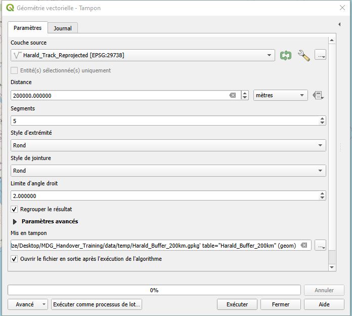
Tamponner la trajectoire du cyclone#
Résultat intermédiaire: Zone tampon

Les résultats intermédiaires doivent montrer la trajectoire du cyclone et la zone tampon de 200 kilomètres autour de celui-ci. La zone tampon doit être une seule entité.#
Reprojeter la zone tampon en EPDG:4326 (pour correpondre au CRS/SCR de la couche raster)
Dans la Boîte à outils de traitement, cherchez
Reprojeter une coucheCouche source:
Harald_Buffer_200km_29738CRS/SCR cible (système de coordonnées de référence):
EPSG:4326 - WGS 84.Entregistrez le résultat dans le dossier
tempsous le nom:Harald_Buffer_200km_4326

Reprojetter la tamponner trajectoire du cyclone#
Importer les frontières administratives:
Fichier:
mdg_admbnda_adm2_BNGRC_OCHA_20181031.gpkgAjoutez le par glisser-déposer ou via
Couche->Ajouter une couche->Ajouter une couche vecteur....
Importer la couche raster de population:
Fichier:
MDG_WorldPop_2020_constrained.tifAjouter la couche via
Couche->Ajouter une couche->Ajouter une couche raster....
Couper le raster de population à l’aide de la zone tampon:
Dans la Boîte à outils de traitements, cherchez
Découper un raster selon une couche de masque(Clip Raster by Mask Layer).Couche source:
MDG_WorldPop_2020_constrainedCouche de masquage:
Harald_Buffer_200km_4326Découpé (masque): Enregistrez le résultat dans le dossier
/data/tempsous le nom:Harald_Pop_Clip.
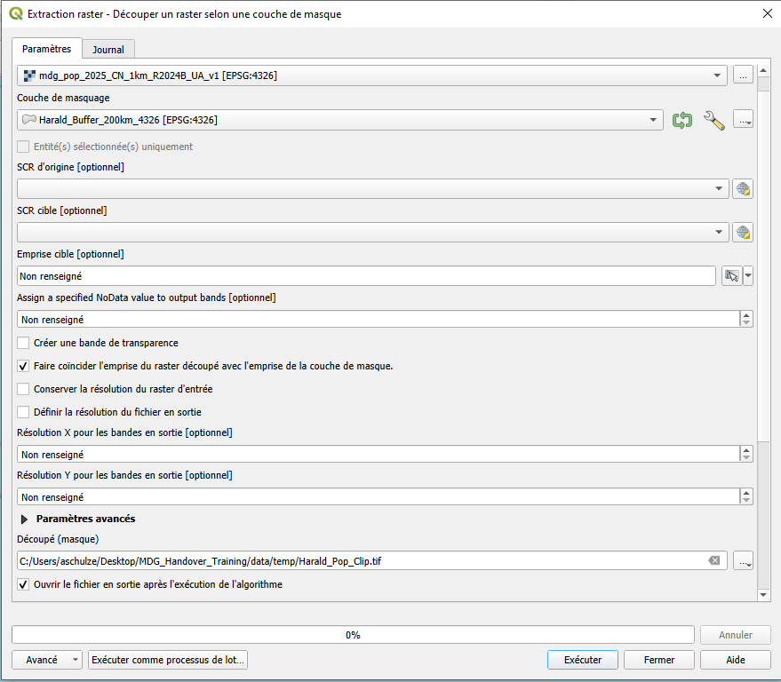
Découpez la population ratser selon la zone affectée par le cyclone (trajectoire tampon du cyclone)#
Résultat intermédiaire: Raster population découpé
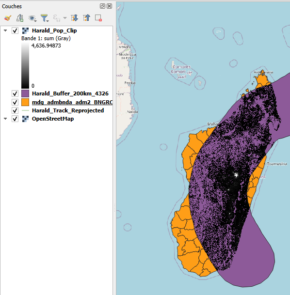
Résultat intermédiaire du découpage de la couche raster de population à l’étendue de la trajectoire tamponnée du cyclone.#
Calculer la population exposée totale:
Dans la boîte à outils de traitements, cherchez
Statistiques de zone(eng.:Zonal Statistics)Couche source (input layer):
mdg_admbnda_adm2_BNGRC_OCHA_20181031.gpkgCouche raster (raster layer):
Harald_Pop_ClipPréfixe de la colonne en sortie (Field prefix): par ex.
exposed_population_Statistiques à calculer:
Somme(eng.:Sum)Enregistrez la couche vecteur mise à jour dans le dossier
/data/resultssous le nomHarald_Exposed_Population.Le résultat sera une nouvelle couche avec les colonnes de la couche
mdg_admbnda_adm2_BNGRC_OCHA_20181031et une nouvelle colonne tout à la droite affichant la population totale se trouvant dans la zone tampon du cyclone pour chaque district.
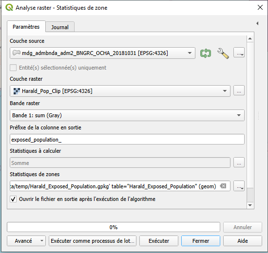
Calcul de la population exposée aux cyclones par district sur la base du raster de population.#
Visualiser la population affectée en classifiant les résultats: Maintenant qu’Aina a estimé la population exposée dans chaque district, elle souhaite mettre en évidence clairement les différences entre les régions sur la carte.
Pour cela, nous allons appliquer une classification graduée à la coucheHarald_Exposed_Populationen utilisant la nouvelle colonne crée par l’outil de Statistiques de zone.
Dans le panneau Panneau couche en bas à gauche, faites un clic droit sur la couche
Harald_Exposed_Populationpuis choisissezPropriétés. Une nouvelle fenêtre s’ouvrira.À gauche, naviguez à l’onglet Symbologie.
En haut de la fenêtre, changez le style style de
Symbole UniqueàGraduéPour la option
Valeur, choisissez le champ contenant la somme de population. Il commence par le préfixe que vous avez défini auparavant, par exempleexposed_population_sum.Choisissez une palette de couleur adaptée à votre carte (par exemple,
Reds).Sélectionnez un mode de classification (par exemple,
Nombres égal (Quantile),Intervalles égauxouRuptures naturelles (Jenks)) et indiquez le nombre de classes (par exemple 5).Cliquez sur
Classerpour générer la classification.En suite, cliquez sur
AppliquerpuisOKpour afficher la carte classifiée.
Tip
Vous pouvez ajuster les bornes des classes ou les étiquettes en double-cliquant sur chaque entrée de classe.

Configuration de la visualisation de la population exposée en cinq classes.#
Vos résultats devraient ressembler à ceci:
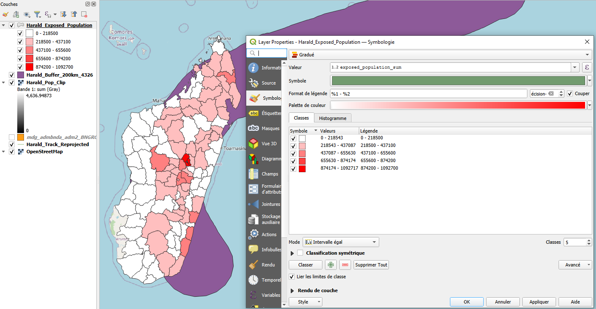
Visualisation de la population exposée en cinq classes.#
Tâche 2: Automatisation de l’estimation de la population exposée – Le modèle d’Aina#
Après avoir estimé manuellement les populations exposées lors des saisons cycloniques précédentes, Aina a décidé de créer un modèle automatisé à l’aide du Modeleur Graphique de QGIS. Cela lui permettra d’agir plus rapidement et d’éviter de répéter les mêmes étapes à chaque fois qu’un cyclone est annoncé.
Dans cette tâche, vous allez aider Aina à construire une version simple de ce modèle, en réutilisant les outils de la Tâche 1. Le modèle doit effectuer les étapes suivantes:
Reprojeter la trajectoire du cyclone en EPSG:29738
Créer une zone tampon autour de cette trajectoire
Reprojeter la zone tampon en EPSG:4326
Découper le raster de population
Appliquer les statistiques zonales pour obtenir la population exposée par district
Ouvrir le modeleur:
Ouvrez le modeleur depuis le menu du haut:
Traitement(Processing) ->Modeleur(Graphic Modeler)
Processing→Graphical Modeler…
Nommer le modèle:
Une nouvelle fenêtre s’ouvrira. À gauch, vous trouvez le panneau
Propriétes du modèle. Ici, vous pouvez definir les informations du modèle:Nom du modèle:
Estimation_Population_ExposéeGroupe:
Outils d'analyse cyclonesLaissez la description vide ou écrivez: Modèle automatisé pour estimer la population exposée a partir d’un tampon autour du cyclone.
Enregistrer le modèle:
Pour enregistrer le modèle:
Cliquez sur l’icône Enregistrer (💾) ou naviguez à
Modèle->Enregistrer.Naviguez jusqu’au dossier
/models/de votre structure de dossier pour la formationEnregistrer le modèle sous:
Esimation_Population_Exposée.
Ajouter les entrées du modèle:
Dans le panneau gauche, ouvrez la section Entrées.
Ajouter les couches d’entrées en cliquant sur
+ Couche Vecteur(+ Vector Layer) et+ Couche Raster(+ Raster Layer) Dans le panneau gauche, élargissez la section Entrées.Ajoutez les couches d’entrée suivantes avec des contraintes de type:
+ Couche VecteurDescription:
Trajectoire du cycloneType de géometrie:
Ligne
+ Couche RasterDescription:
Raster Population
+ Couche VecteurDescription:
Frontières adminitrativesType de géometrie:
Polygone
Ces couches apparaîtront en haut du canevas du modèle et serviront de données d’entrée lorsque le modèle sera exécuté.
Tip
Toutes les entrées doivent être définies comme obligatoires, afin que le modèle dispose toujours des données nécessaires pour s’exécuter correctement.

Ajouter la entrée couche vecteur pour la trajectoire du cyclone#

Ajouter la entrée couche vecteur pour les frontières administratives#
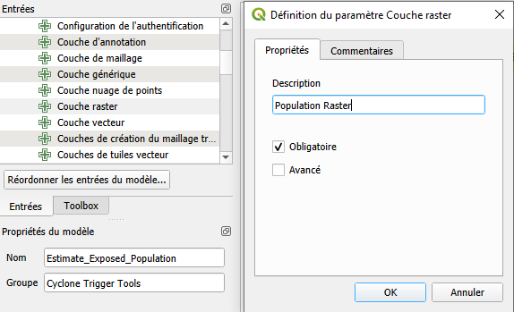
Ajouter la couche raster pour les données de population#
Résultat intermédiaire:

Résultat intermédiaire de la définition des données d’entrée du modèle#
Reprojetter la trajectoire du cyclone vers EPSG:29738
Dans le panneau de Algorithmes à gauche, cherchez Reprojeter une couche et faites un double-clic dessus.
Dans la fenêtre de configuration:
Ajouter une description:
Reprojeter la couche de trajectoire du cyclone à EPSG:29738Définissez la Couche source sur
Trajectoir du cyclone(depuis Entrée du modèle).Définissez la SCR cible sur
EPSG:29738 - Tananarive / UTM zone 38 SCliquez sur
OKpour ajouter l’étape au model.
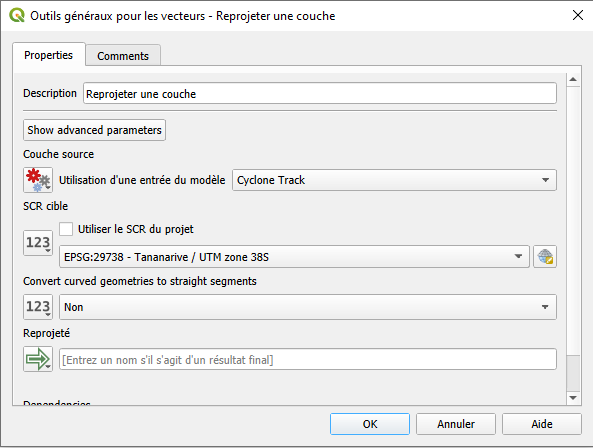
Reprojeter la couche du trajectoire du cyclone vers un système de référence de coordonnées métrique (SCR) EPSG: 29738#
Tamponner la trajectoire du cyclone reprojetée
Dans le panneau Algorithmes, cherchez
Tampon(eng.:Buffer)Dans la fenêtre de configuration:
Ajoutez une description:
Tamponner la trajectoire du cyclone reprojetéeChoisissez, comme couche source, le résultat de l’étape précedente (sous l’option
Sortie d'un algorithme->"Reprojeté" créé par l'algorithme "Reprojeter la couche de trajectoire du cyclone à EPSG:29738").Définissez la distance du tampon à
200000(200 km).Laissez les segments à la valeur par défaut (
5).Regrouper le résultat:
Oui.Cliquez sur
OK. L’algorithme sera ajouter au modèle.
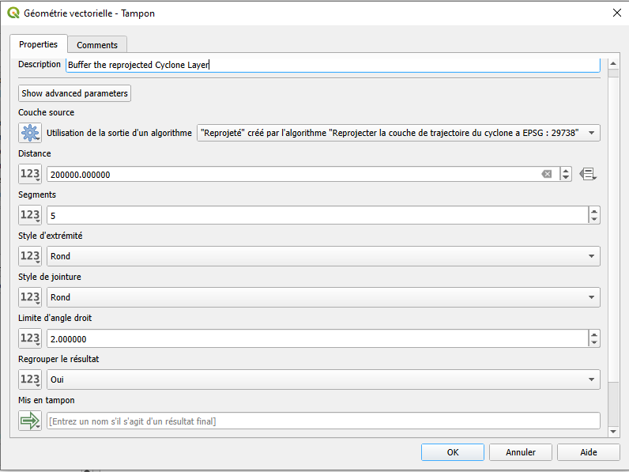
Ajouter l’étape pour tamponner la couche Cyclone reprojetée.#
Reprojeter le tampon vers le SCR du projet (EPSG:4326)
Dans le panneau Algorithmes, cherchez
Reprojeter une couche(eng.:Reproject vector layer).Dans la fenêtre de configuration:
Ajoutez une description:
Reprojeter le tampon ver EPSG:4326.Choisissez, comme couche source, le résultat de l’étape prècedente (sous l’option
Sortie d'un algorithme->"Mis en tampon" créé par l'algorithme "Tamponner la trajectoire du cyclone reprojetée")SCR cible:
EPSG: 4326 - WGS 84Cliquez sur
OKpour ajouter l’étape au modèle.

Reprojeter le tampon vers EPSG:4326.#
Découper la couche raster de population avec le tampon du cyclone
Dans le panneau Algorithmes, cherchez
Découper un raster selon une couche de masque(eng.:Clip Raster by Mask Layer)Dans la fenêtre de configuration:
Ajoutez une description:
Decouper la couche raster de population avec le tampon du cyclone.Comme “Couche source”, choisissez la Entrée
Raster PopulationComme “Couche de Masquage”, choisissez le tampon du cyclone (sous
Sortie d'un algorithme->"Mis en tampon" créé par l'algorithme "Tamponner la trajectoire du cyclone reprojetée")Laissez la sortie de l’algorithme (
reprojeté) vide.Cliquez sur
OKpour ajouter l’étape au modèle.

Découper la couche raster de population pour l’étendre au tampon cyclon.#
Calul de la population exposée aux cyclone par district
Dans le panneau Algorithme, cherchez pour l’outil
Statistiques de zone(eng.:Zonal Statistics) et ouvrez le.Dans la fenêtre de configuration:
Ajoutez une description:
Calcul de la population exposée aux cyclone par districtComme “Couche source”, choisissez la couche
Frontières administratives.Comme “Couche raster”, choisissez le raster découpé (sous
Sortie d'un algorithme->"Découpé (masque)" créé par l'algorithme "Decouper la couche raster de population avec le tampon du cyclone")Définissez le préfixe de la colonne en sortie comme
exposed_population_Sous statistiques à calculer, choisissez
Somme(eng.:Sum).Sous statistiques de zones, ajoutez un nombre pour la sortie de l’algorithme:
exposed_population_sumCliquez sur
OKpour ajouter l’étape au modèle.

Calcul de la population exposée aux cyclones par district utilisant l’algorithme “Statistiques de zone”.#
Vos résultats devraient ressembler à ceci:

Votre modèle devrait ressembler à ceci. Tous les algorithmes sont correctement connectés et la sortie du modèle est définie.#
Valider le modèle (recommandé)
Avant d’enregistrer ou exécuter le modèle. Dans le menu en haut de la fenêtre, cliquez sur
Modèle-> ✔️Valider le modèle.Corrigez les éventuels avertissements ou erreurs affichés dans le panneau de journal.
Cela permet de s’assurer que le modèle est complet et qu’il s’exécutera sans erreur.
Exécuter le modèle
Exécutez le modèle: Dans le menu en haut de la fenêtre, cliquez sur
Modèle->Exècuter le modèle...Maintenant, vous devez définir les Couches Source pour le modèle. Vous pouvez choisir les couches que vous avez importées dans votre projet QGIS.
Sous Frontières Administratives, choisissez:
mdg_admbnda_adm2_BNGRC_OCHA_20281031.gpkgSous Raster Population, choisissez:
MDG_WorldPop_2020_constrained.tifSous Trajectoire Cyclone, choisissez:
example_Harald_2025_TrackDefinissez la sortie du modèle “exposed_population_sum” comme:
Harald_Exposed_Populationet engeristrez-le dans le dossier/data/output/en cliquant sur les trois points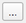
.Cliquez sur
Éxecuter.
Vous pouvez maintenant exécuter ce modèle chaque fois qu’une nouvelle trajectoire de cyclone est disponible.
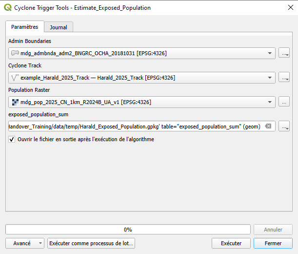
Pour exécuter le modèle, spécifiez l’entrée comme indiqué dans l’image et définissez le nom de la couche de sortie.#
Vos résultats devraient ressembler à ceci:

Ajouter le tampon du cyclone comme sortie supplémentaire du modèle
Faites un double-clic sur l’algorithme “Reprojeter le tampon vers EPSG:4326” pour ouvrir sa configuration.
Dans le champ
Reprojecté, entrez un nom pour la sortie du modèle, comme:cyclone_harald_bufferCliquez sur
OKpour enregistrer la modification.Maintenant, le modèle va produire à la fois les résultats de population exposée et la zone tampon du cyclone lors de son exécution.

Exécuter à nouveau le modèle
Exécutez le modèle en cliquant sur
Modèle->Exécuter le modèle....Sous Frontières Administratives, choisissez:
mdg_admbnda_adm2_BNGRC_OCHA_20281031.gpkgSous Raster Population, choisissez:
MDG_WorldPop_2020_constrained.tifSous Trajectoire Cyclone, choisissez:
example_Harald_2025_TrackDefinissez la sortie du modèle “exposed_population_sum” comme:
Harald_Exposed_Populationet engeristrez-le dans le dossier/data/output/en cliquant sur les trois points .Sous cyclone_harald_buffer, cliquez sur les trois points et naviguez au dossier
/data/output/et nommez la sortie commecyclone_harald_buffer.Cliquez sur
Éxecuter.


{kind=link}
{kind=link}
{kind=link}
{kind=link}
{kind=link}
{kind=link}
{kind=link}
{kind=link}
{kind=link}
{kind=link}
{kind=link}
Tâche 3: Identification des établissements de santé et d’éducation impactés – Aina ajoute des couches supplémentaires#
Après avoir construit son modèle pour estimer la population exposée, Aina souhaite améliorer son utilité. Elle décide d’identifier également les services essentiels affectés par les cclones — en particulier les établissments de santé et les écoles.
Elle veut non seulement savoir quels établissements sont affectés, mais aussi combien il en existe au total par district. Cela lui permettera de calculer le pourcentage de service affectés dans chaque zone.
Pour cela, elle utilisera deux jeux de données contenant des points issus d’OpenStreetMap:
Importer les données des établissements de santé et d’éducation Tout d’abord, examinons les données avec lesquelles nous allons travailler:
Accédez à votre dossier
Data/input/Glissez-déposez les couches suivantes dans votre projet QGIS:
hotosm_mdg_health_facilitieshotosm_mdg_education_facilities
Vérifiez que les deux couches sont visibles dans le panneau Couches.
Enregistrez votre modèle sous un nouveau nom
Ouvrez votre modèle existant
Estimate_Exposed_Population.model3.Immédiatement, enregistrez-le sous un nouveau nom:
Cliquez sur
Modèle→Enregistrer le modèle sous…Enregistrez-le dans le dossier
/projectsous le nom:
estimate_exposed_population_health_education
Ajouter de nouvelles entrées dans le modèle
Dans la section Entrées a gauche, ajoutez:
Couche vecteur:Description:
Établissements de santé
Type de géometrie:
Point
Couche vecteur:Description:
Établissements d'éducation
Type de géometrie:
Point

Définir une nouvelle entrée de modèle: couche vectorielle de points représentant les établissements de santé#

Définir une nouvelle entrée de modèle: couche vectorielle de points représentant les établissements d’enseignement#
Compter tous les établissements de santé par district (ADM2)
Dans le panneau Algorithmes, cherchez
Compter les points dans les polygonesConfiguration:
Description:
Comptez le nombre d’établissements de santé dans chaque districtPolygones:
Frontières administratives(sous entrées du modèle)Points:
Établissements de santé(sous entrées du modèle)Nom du champ de dénombrement:
count_health_totalLaisser la sortie vide.

Configuration de l’opération : compter le nombre d’établissements de santé dans chaque district.#
Compter tous les établissements d’enseignement par Niveau 2
Ajouter une autre étape Compter les points dans un polygone.
Configuration:
Ajouter une description:
Comptez le nombre d'établissements d’enseignement dans chaque districtPolygones:
Limites administratives(entrée du modèle)Points:
Établissements d’enseignement(entrée du modèle)Nom du champ de dénombrement:
count_education_totalLaissez la sortie vide
{kind=link}
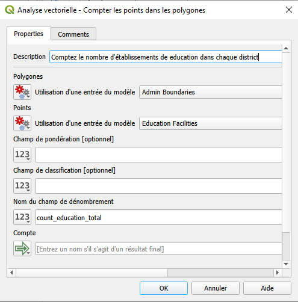
Configuration de l’opération: compter le nombre d’établissements scolaires dans chaque district.#
Intersection des établissements de santé avec la zone tampon du cyclone
Depuis le panneau Algorithmes, recherchez Intersection.
Dans la fenêtre de configuration:
Ajouter une description:
Établissements de santé dans la zone d'impact du cyclone
Couche source:
Établissements de santé(entrée du modèle)Couche de superposition: zone tampon du cyclone (utiliser “Reprojected to EPSG:4326” depuis la Sortie d’algorithme)
Laissez la sortie vide.
Cliquez sur OK pour ajouter l’étape au modèle.
{kind=link}
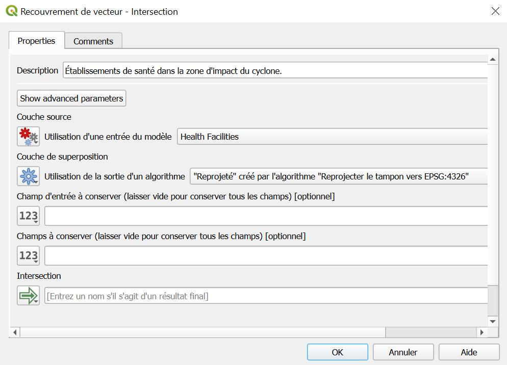
Configuration de l’opération : intersecter les établissements de santé avec la zone d’impact du cyclone.#
Intersection des établissements d’éducation avec la zone tampon du cyclone
Ajouter un autre algorithme Intersection.
Configuration:
Ajouter une description:
Établissements d’éducation dans la zone d'impact du cyclone.
Couche source:
Établissements d’éducation(entrée du modèle)Couche de superposition: zone tampon du cyclone (utiliser “Reprojecter vers EPSG:4326” depuis la Sortie d’algorithme)
Laisser la sortie vide.
Cliquer sur OK pour ajouter l’étape au modèle.
{kind=link}
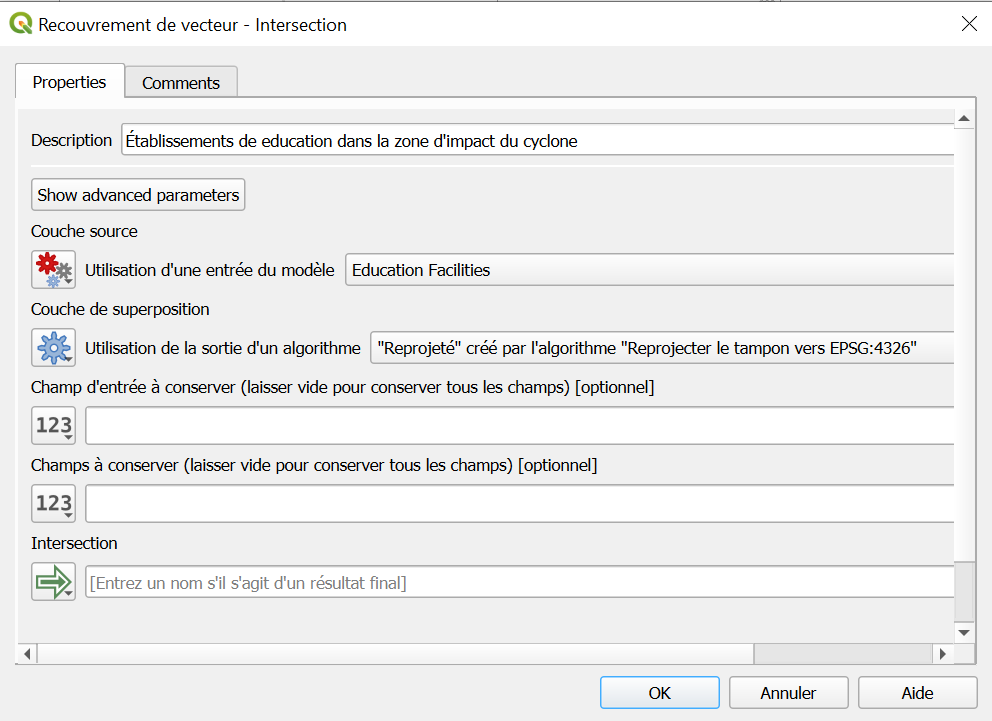
Configuration de l’opération: intersecter les établissements de education avec la zone d’impact du cyclone.#
Compter les établissements de santé affectés par Niveau 2
Ajouter Compter les points dans un polygone
Configuration:
Ajouter une description:
Compter les établissements de santé touchés par district
Polygones: sortie du décompte total des établissements de santé
Points: sortie des établissements de santé intersectés
Nom du champ de dénombrement:
sum_exposed_healthsites_POICliquez sur OK pour ajouter l’étape au modèle.
{kind=link}
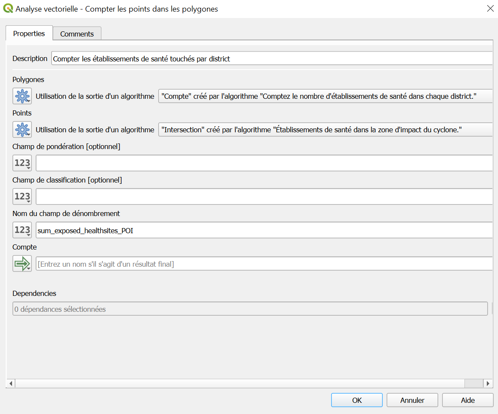
Configuration de l’opération: compter les établissements de santé touchés par district.#
Compter les établissements d’enseignement affectés par Niveau 2
Ajouter Compter les points dans un polygone
Configuration:
Ajouter une description:
Compter les établissements d’enseignement touchés par district
Polygones: sortie du décompte total des établissements d’enseignement
Points: sortie des établissements d’éducation intersectés
Nom du champ de dénombrement:
sum_exposed_education_POICliquez sur OK pour ajouter l’étape au modèle.
{kind=link}
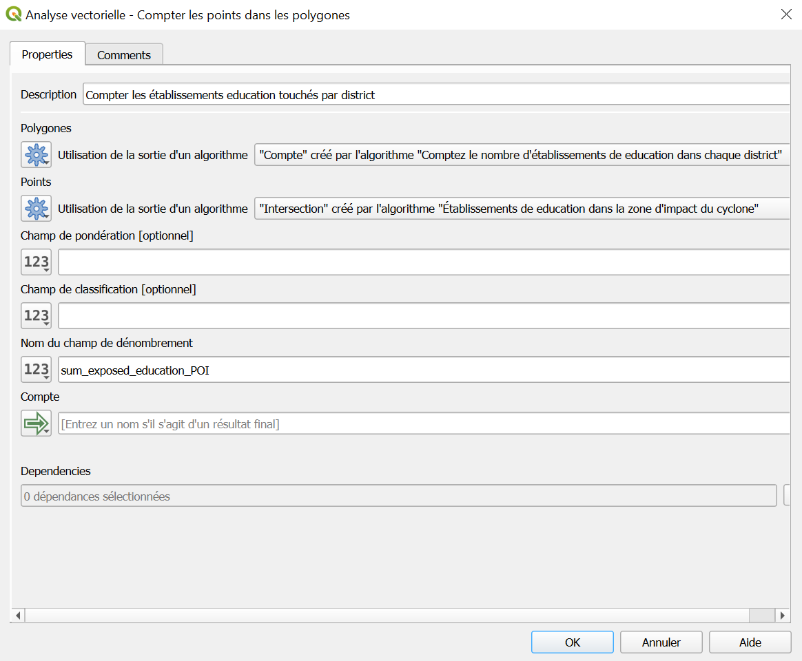
Configuration de l’opération: compter les établissements de santé touchés par district.#
Calculer le pourcentage d’établissements de santé affectés Pour calculer le pourcentage d’établissements de santé affectés par zone administrative, utilisez la Calculatrice de champ:
Ajouter la Calculatrice de champ:
Configuration:
Ajouter une description:
Calculer le pourcentage d’établissements de santé touchés par district
Couche en entrée: sortie du comptage des établissements de santé affectés
Nom du champ de sortie:
pct_health_affectedType de champ: Décimal (réel)
Expression:
CASE WHEN "count_health_total" > 0 THEN "sum_exposed_healthsites_POI" / "count_health_total" * 100 ELSE
Définir la sortie comme Sortie du modèle
Nommer:
admin2_health_affected_pct

Configuration de l’opération: calculer le pourcentage d’établissements de santé touchés par district.#
Calculer le pourcentage d’établissements d’enseignement affectés
Pour calculer le pourcentage d’établissements d’enseignement affectés par zone administrative, utilisez la Calculatrice de champ:
Ajouter la Calculatrice de champ:
Configuration:
Ajouter une description:
Calculer le pourcentage d’établissements d’éducation touchés par district
Couche en entrée: sortie du comptage des établissements d’éducation affectés
Nom du champ de sortie:
pct_education_affectedType de champ: Décimal (réel)
Expression:
CASE WHEN "count_education_total" > 0 THEN "sum_exposed_education_POI" / "count_education_total" * 100 ELSE 0 END
Définir la sortie comme Sortie du modèle
Nommer:
admin2_education_affected_pct
{kind=link}
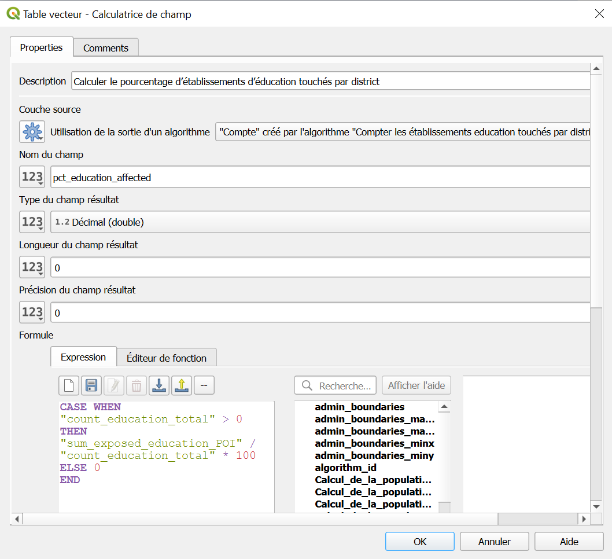
Configuration de l’opération: calculer le pourcentage d’établissements d’éducation touchés par district.#
Valider et enregistrer votre modèle étendu
Cliquez sur le bouton ✔️ Valider le modèle (sous
Modèledans le menu en haut) pour vérifier les erreurs.Enregistrez à nouveau sous:
Estimate_Exposed_Population_Health_Education.model3
Exécuter le modèle
Cliquez sur le bouton ▶️ Exécuter en haut de la fenêtre du Modélisateur Graphique.
Dans la boîte de dialogue:
Sélectionnez les couches d’entrée nécessaires:
Trajectoire du cyclone→ sélectionnez le fichier GeoJSON du cyclone (ex.Harald_2025_Track.geojson)Raster de population→ sélectionnez le raster WorldPopLimites administratives→ sélectionnez la couche de Niveau 2 (ex.MDG_adm2.gpkg)Établissements de santé→ sélectionnez la couche ponctuelle des établissements de santéÉtablissements d’enseignement→ sélectionnez la couche ponctuelle des écoles
Choisissez un emplacement pour enregistrer les couches finales (vous pouvez laisser les couches intermédiaires en mémoire temporaire)
Sorties:
Enregistrez les couches de sorties dans le dossier
/data/outputcomm ceci:“exposed_population_sum” comme
Harald_Exposed_Population“example_Harald_2025_Track” comme
cyclone_harald_buffer.“admin2_health_affected_pct” comme
admin2_health_affected“admin2_education_affected_pct” comme
admin2_education_affected
Cliquez sur Exécuter pour lancer le modèle complet.
Une fois terminé, toutes les couches finales seront affichées dans votre espace de travail QGIS.

Vue d’ensemble du Modèle Graphique de la tâche 3 montrant tous les algorithmes connectés et les sorties définies.#
{kind=link}
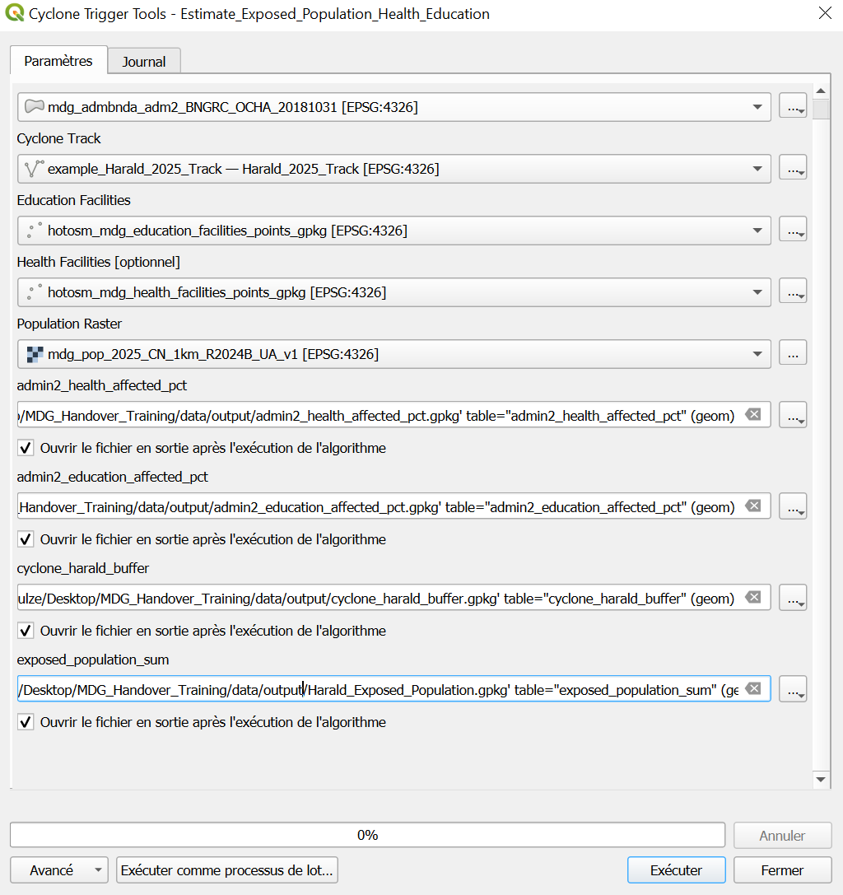
Configuration des paramètres pour exécuter le modèle de la tâche 3 avec toutes les couches d’entrée requises.#
{kind=link}
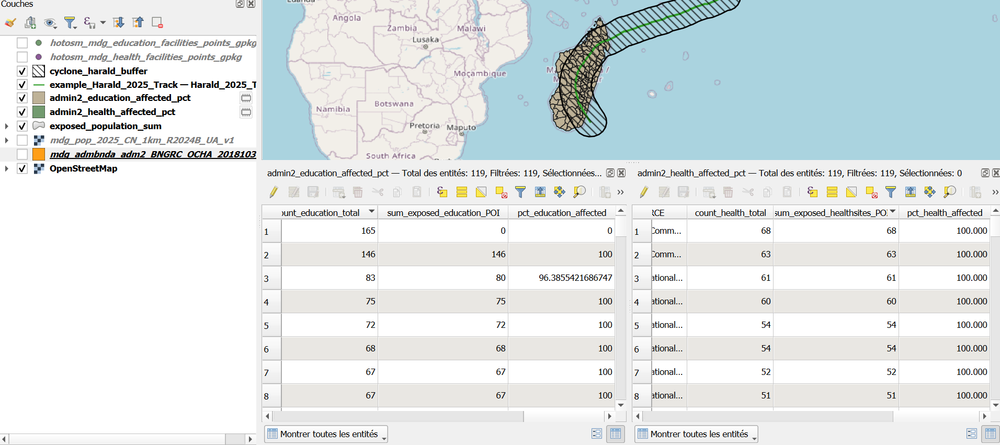
Résultats du modèle de la tâche 3 affichés dans QGIS, y compris les pourcentages d’établissements de santé et d’éducation touchés par district.#
Tâche 4: Visualiser les résultats de l’impact du cyclone – Aina applique des styles à ses cartes#
Après avoir terminé son modèle, Aina souhaite communiquer clairement les résultats — à la fois à ses collègues de la Croix-Rouge et à des partenaires externes.
Elle en a assez de devoir restyler manuellement chaque couche à chaque fois que de nouvelles données cycloniques arrivent. À la place, elle veut :
✅ Des visuels clairs et cohérents
🔁 Des modèles réutilisables
📂 Des fichiers .qml standardisés partagés entre projets
Dans cette tâche, vous allez aider Aina à appliquer des styles .qml existants et à en créer de nouveaux pour les couches qui n’ont pas encore de style défini.
1. Charger les couches nécessaires (si ce n’est pas déjà fait)#
Assurez-vous que les couches suivantes sont déjà chargées dans votre projet QGIS. Ce sont les sorties de la Tâche 3:
Harald_2025_TrackHarald_Buffer_200kmHarald_Exposed_Populationsum_exposed_healthsites_POIsum_exposed_education_POIadmin2_health_affected_pctadmin2_education_affected_pct
Si l’une d’elles manque:
Chargez-la par glisser-déposer depuis votre dossier
results, ouUtilisez
Couche→Ajouter une couche→Ajouter une couche vectorielleouAjouter une couche raster
2. Appliquer des fichiers de style prédéfinis#
Appliquez les fichiers de style .qml suivants aux couches correspondantes:
Couche |
Fichier de style |
|---|---|
|
|
|
|
|
|
|
|
|
|
Note
⚠️ Pour les établissements de santé et établissements d’enseignement, les fichiers de style fournis sont liés à la colonne contenant le nombre total d’établissements exposés.
Ils ne sont pas basés sur la colonne de pourcentage.
Étapes:
Faites un clic droit sur la couche dans le Panneau des couches
Sélectionnez Propriétés
Dans la fenêtre qui s’ouvre, allez dans l’onglet Symbologie
En bas à gauche, cliquez sur Style → Charger le style…
Cliquez sur les trois points

Naviguez jusqu’au fichier
.qmlcorrespondant dans le dossierlayer_styleet sélectionnez-leCliquez sur Ouvrir, puis Appliquer et OK pour confirmer
💡 Si le style ne se charge pas correctement, vérifiez les noms de colonnes et assurez-vous qu’ils correspondent à ceux utilisés dans le fichier
.qml. Pour cela, ouvrez la table attributaire de la couche et comparez les noms des champs.

Carte montrant le nombre de personnes exposées par district après l’application du style .qml.#
{kind=link}
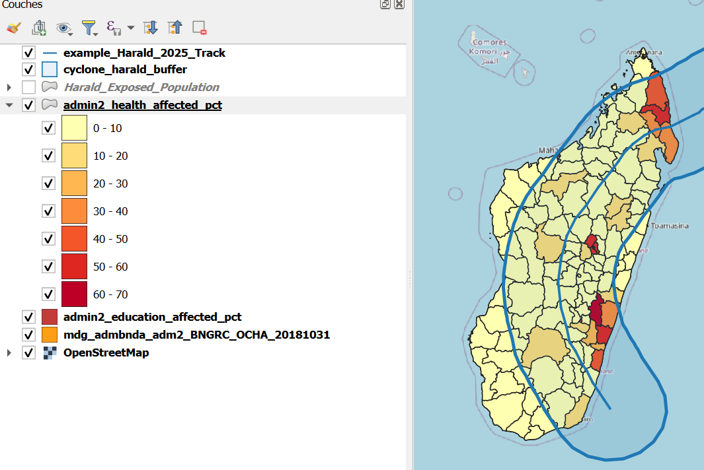
Carte indiquant le nombre total d’établissements de santé exposés par district, représentés avec le style prédéfini.#
{kind=link}
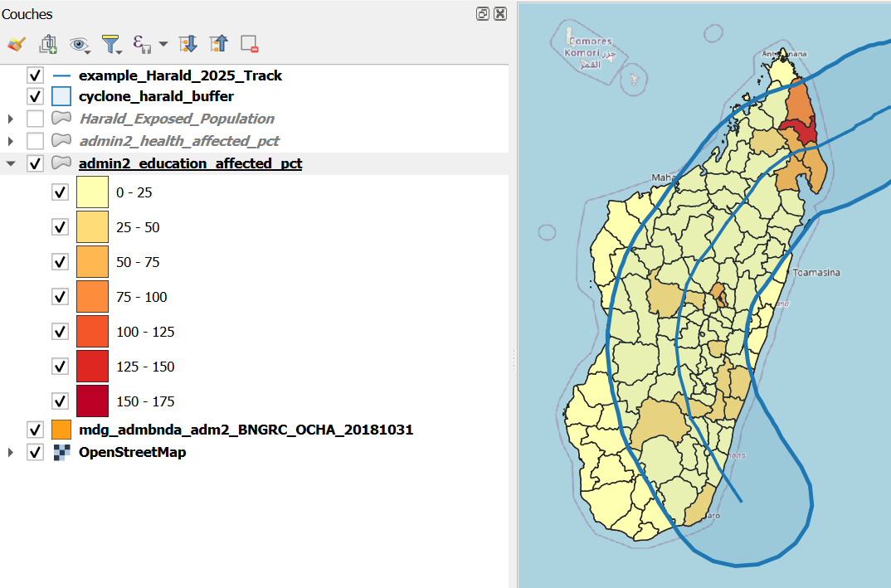
Carte affichant le nombre total d’établissements scolaires exposés par district, après application du fichier de style .qml.#
3. Styliser manuellement les couches de pourcentage#
Aina souhaite également visualiser le pourcentage d’établissements de santé et d’éducation exposés. Toutefois, puisqu’aucun style n’est encore disponible, elle doit effectuer la procédure manuellement.
Étapes:
Cliquez droit sur la couche
admin2_health_affected→ sélectionnez Dupliquer la coucheRenommez la couche dupliquée:
admin2_health_affected_percentageFaites un clic droit sur la couche dans le Panneau des couches
Sélectionnez Propriétés
Dans la fenêtre qui s’ouvre, allez à l’onglet Symbologie
Définissez la Symbologie sur
GraduéeChoisissez le champ approprié:
pct_health_affected
Ouvrez l’onglet Histogramme pour visualiser la distribution des valeurs en cliquant sur
calculer l’histogrammeEnsuite, retournez à l’onglet
Classeset configurez:Mode:
Intervalle égalClasses:
4
Cliquez sur
OK. Cela créera quatre classes (0–25%,25–50%,50–75%,75–100%)Choisissez un dégradé de couleur (ex.: jaune clair → rouge foncé)
Facultativement, personnalisez les étiquettes de classes pour plus de clarté
Cliquez sur Appliquer
Répétez la même procédure pour la couche
admin2_education_affected.
Après duplication, renommez la nouvelle couche :
admin2_health_affected_percentage
🧠 Pourquoi 4 classes égales ?
Cela permet de visualiser la gravité par district en utilisant des catégories de risque simples et interprétables. Cependant, vous pouvez aussi expérimenter les ruptures naturelles si les données sont inégalement réparties.
4. Enregistrez vos nouveaux styles pour les réutiliser#
Enregistrez vos styles manuels au format .qml pour pouvoir les réutiliser plus tard.
Étapes:
Faites un clic droit sur la couche dans le Panneau des couches
Sélectionnez Propriétés
Dans la fenêtre qui s’ouvre, allez à l’onglet Symbologie
Cliquez sur
Style→Enregistrer le style…Enregistrez le fichier dans le dossier
layer_sytleUtilisez les noms de fichiers suivants:
health_pct_affected_styleeducation_pct_affected_style
5. (Optionnel) Importer les styles dans votre bibliothèque QGIS#
Pour réutiliser vos styles dans de futurs projets:
Allez dans
Préférences→Gestionnaire de stylesCliquez sur
Importer/Exporter→Importer des élémentsParcourez et sélectionnez vos fichiers
.qmlenregistrés
Les styles apparaîtront désormais comme préréglages dans le Panneau de style de couche.
Tâche 5: Création rapide de cartes – Aina utilise des modèles de carte#
Après tout le travail d’analyse et de stylisation, Aina est prête à partager ses résultats. Mais créer une carte professionnelle à partir de zéro à chaque fois serait long et répétitif.
Pour gagner du temps, elle utilise des modèles de carte (.qpt) préparés par son équipe. Ces modèles contiennent déjà les éléments essentiels — cadres cartographiques, légendes, logos, titres et barres d’échelle. Grâce à eux, Aina peut transformer son analyse en une carte claire et cohérente en seulement quelques clics.
✅ Objectif
Appliquer un modèle de carte QGIS prêt à l’emploi pour créer et exporter rapidement des cartes montrant les impacts du cyclone sur la population, les établissements de santé et les écoles.
Charger le modèle d’impression préconçu
Localisez le modèle
cyclone_impact_population_map_template.qptdans votre dossier projet sous:
Map_Templates/Vous pouvez charger le modèle par glisser-déposer:
Ouvrez votre projet QGIS.
Glissez directement le fichier
.qptdans QGIS — une nouvelle mise en page sera automatiquement créée.
Ou bien :
Allez dans
Projet→Nouvelle mise en pageEntrez un nom (par ex.
Harald_2025_population)Cliquez sur
OKDans la mise en page, allez dans
Mise en page→Importer depuis un modèle…Sélectionnez le fichier
cyclone_impact_overview_map_template.qptet cliquez surOuvrir
Vérifiez et définissez le format de la page
Cliquez droit n’importe où sur le canevas blanc et choisissez
Propriétés de la page.Dans le panneau de droite, assurez-vous de:
Taille de la page: A3
Orientation: Paysage
Mettre à jour le tableau attributaire des districts exposés
Dans la Mise en page, cliquez sur le tableau attributaire (à droite dans la mise en page).
Dans le panneau Propriétés de l’élément:
Assurez-vous que la bonne couche est sélectionnée:
Harald_Exposed_populationCliquez sur
Actualiser les données du tableauCliquez sur
Attributs…→ dans la partie supérieure sous Champs, cliquez surEffacerPuis ajoutez les champs suivants avec ➕:
Champs:
ADM1_EN;ADM2_EN;ADM2_PCODE;exposed_population_sumPour trier le contenu du tableau, sous l’onglet Trier, cliquez sur ➕ et ajoutez la colonne
AMD1_ENOrdre de tri: Ascendant
Cliquez sur
OK
⚠️ Avertissement – Tableaux longs
Si le tableau attributaire que vous souhaitez inclure est plus long que le cadre cartographique, une partie sera coupée dans la carte exportée.
Pour corriger cela, ouvrez les propriétés du tableau dans la mise en page et réduisez la taille de la police jusqu’à ce que le tableau entier tienne.
Ajuster la légende
Dans la mise en page, cliquez sur l’élément Légende.
Dans le panneau Propriétés de l’élément:
Décochez Mise à jour automatique
Faites défiler jusqu’à Éléments de la légende et supprimez toutes les entrées (🗑️)
Ajoutez les couches pertinentes suivantes:
example_Harald_2025_Trackcyclone_harald_bufferHarald_Exposed_Population
Lors de la sélection des couches, cochez Uniquement les couches visibles
Renommez les entrées de légende pour correspondre aux noms sur la carte:
example_Harald_2025_Track→
Trace du cyclone Harald
cyclone_harald_buffer→
Zone tampon de 200 km – Cyclone Harald
Harald_Exposed_Population→
Nombre de personnes exposées
Mettre à jour les logos et icônes
Les logos à insérer sont représentés par des X rouges.
Cliquez sur l’image dans la Liste des éléments.
Cliquez sur les trois points
à côté du chemin de fichier.Parcourez le dossier
logos_pictureset sélectionnez le bon logo.
Revoir et mettre à jour les textes de la mise en page
Vérifiez que tous les textes sont à jour, en particulier:
Titre de la carte
Nom et date du cyclone
Auteur/Organisation (facultatif)
Ajustez la taille de la police ou l’alignement si nécessaire
✅ Liste de vérification finale#
Tâche |
Fait |
|---|---|
Page définie en format A3 Paysage |
☐ |
Seul le groupe de couches pertinent est actif |
☐ |
Tableau attributaire des districts exposés mis à jour |
☐ |
Légende nettoyée et renommée |
☐ |
Tous les éléments de texte mis à jour |
☐ |
Le rendu final devrait ressembler à ceci après le stylage
La carte montre désormais clairement la population exposée dans les districts affectés. La ligne de trajectoire du cyclone — utilisée comme donnée d’entrée — est mise en évidence, ainsi que la zone tampon, qui sert de proxy pour identifier les districts exposés.
Sur le côté droit de la carte, un tableau présente tous les districts exposés, avec les données sur la population totale et la population exposée. Les districts (Niveau 2) sont regroupés sous leurs régions correspondantes (Niveau 1).

Tâche 6: Exporter les résultats du modèle pour l’équipe des opérations#
Contexte – Aina soutient les décideurs
Après avoir produit des cartes et des visualisations, Aina reçoit souvent des demandes de l’équipe des opérations:
« Peux-tu nous envoyer les données au format tableau ? »
Plutôt que d’exporter manuellement ces tableaux à chaque fois, Aina souhaite automatiser cette étape dans son modèle — afin que chaque exécution produise des fichiers de données clairs et prêts à l’emploi.
Dans cette tâche, vous aiderez Aina à étendre son modèle existant pour exporter certaines couches.
Nous allons joindre les couches suivantes étape par étape:
admin2_health_affected_pct:
Contient le nombre total d’établissements de santé, le nombre d’établissements affectés et le pourcentage d’établissements affectés.admin2_education_affected_pct:
Contient le nombre total d’établissements scolaires, le nombre d’établissements scolaires affectés et le pourcentage d’établissements scolaires affectés.exposed_population:
Contient la population totale par district ainsi que la population exposée, issue de l’étape des statistiques zonales.
Ouvrez votre modèle
Ouvrir
Estimate_Exposed_Population_Health_EducationEnregistrer une nouvelle version sous :
Estimate_Exposed_Population_Health_Education_Spreadsheet_Export
Joindre les données de santé et d’éducation dans une seule couche
Dans les Algorithmes, cherchez
Joindre les attributs par valeur de champ(eng.:Join Attributes by Field Value).Ajoutez une description:
Joindre santé et éducation dans une seule couche par ADM2Configurez l’algorithme comme suit:
Couche source:
admin2_health_affected(sélectionner depuis Sortie de l’algorithme)Champ de la table:
ADM2_PCODECouche en entrée 2:
admin2_education_affected(sélectionner depuis Sortie de l’algorithme)Champ de la table 2:
ADM2_PCODECouche 2 champs à copier: Laisser vide (tous les champs seront copiés)
Type de jointure: Prendre uniquement les attributs de la première entité correspondante (un-à-un)
Laisser la sortie comme Sortie du modèle (sans entrer un nom)
{kind=link}
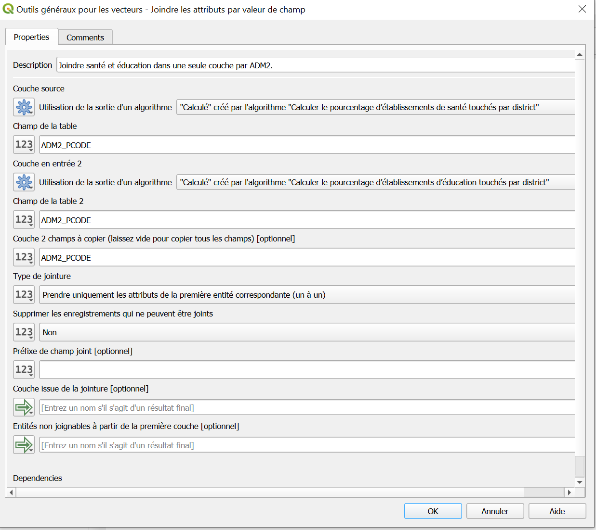
Configuration de l’opération: joindre les données de santé et d’éducation par le champ ADM2_PCODE afin de combiner les résultats dans une seule couche.#
Joindre le résultat aux données de population
Maintenant, joindre le résultat de l’étape précédente (santé + éducation) aux données de population exposée.
Ajouter un deuxième algorithme
Joindre les attributs par valeur de champ(eng.:Join Attributes by Field Value) au modèle.Ajouter une description:
Joindre les données de population avec les indicateurs santé et éducationConfigurer l’algorithme comme suit:
Couche source:
exposed_population(sélectionner depuis la Sortie de l’algorithme des statistiques zonales)Couche d’entrée 2: Sortie de l’étape précedente (santé + éducation)
Champ de la table:
ADM2_PCODEChamp de la table 2:
ADM2_PCODEChamps à copier de la couche 2: (Entrer les noms de champs exactement comme ci-dessous — séparés par des points-virgules, sans espaces)
count_health_total;sum_exposed_health;pct_exposed_health;count_education_total;sum_exposed_education;pct_exposed_education
Type de jointure : Prendre uniquement les attributs de la première entité correspondante (un-à-un)
Laisser la sortie comme Sortie du modèle sans nom.
{kind=link}
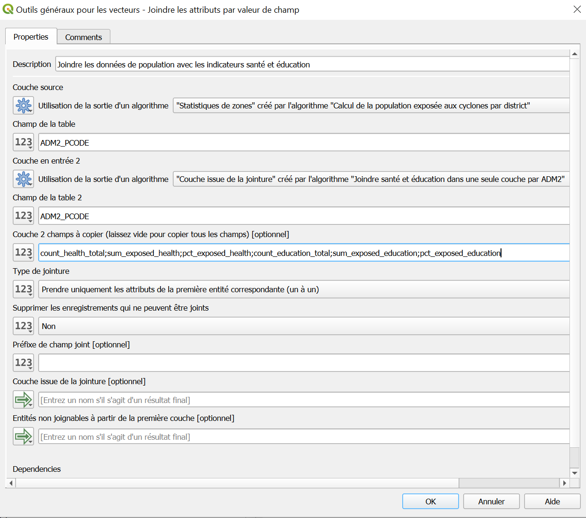
Configuration de l’opération: joindre les données de population avec les indicateurs de santé et d’éducation.#
Tip
Où trouver les noms des colonnes?
Ouvrez les tables attributaires des couches health_total_per_admin2, sum_exposed_healthsites_POI et admin2_health_affected_pct dans QGIS.
Consultez les en-têtes de colonnes pour trouver les noms exacts des champs à copier.
Warning
Les espaces invisibles feront échouer la jointure!
Si un nom de colonne comme count_health_total contient un espace invisible à la fin, la jointure échouera silencieusement.
Copiez toujours les noms de champs directement depuis la table attributaire pour éviter les erreurs.
Exporter les résultats vers un tableur
Dans la Boîte à outils de traitement, recherchez
Exporter vers un tableur(eng.:Export to spreadsheet) et double-cliquez pour ouvrir.Ajouter une description:
Exporter les données de population, d'éducation et de santé dans un seul tableauConfigurer l’outil comme suit:
Couche d’entrée: Sélectionner la sortie de l’étape précedente (3) depuis la Sortie de l’algorithme
Tableur de destination:
exposure_indicators_spreadsheetCliquer sur OK pour l’ajouter au modèle.
Une fois que vous exécutez le modèle, cette étape génèrera automatiquement un fichier tableur contenant tous les indicateurs nécessaires pour l’équipe des opérations!
{kind=link}
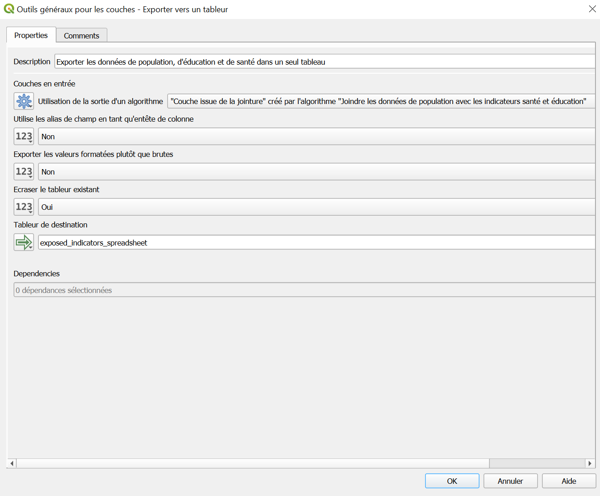
Exporter tous les indicateurs (population, santé, éducation) vers un tableau unique au format tableur.#
Valider et enregistrer votre modèle étendu
Cliquez sur le bouton ✔️ Valider le modèle (sous
Modèledans le menu du haut) pour vérifier les erreurs.Enregistrez à nouveau sous:
Estimate_Exposed_Population_Health_Education.model3
Exécuter le modèle
Cliquez sur le bouton ▶️ Exécuter en haut à droite de la fenêtre du Modeleur graphique.
Entrées:
Cliquez sur les trois points pour chaque jeu de données et sélectionnez les entrées appropriées:
Cyclone Track→ sélectionnez le fichier GeoJSON de la trajectoire de la tempête (ex.Harald_2025_Track.geojson)Population Raster→ sélectionnez le fichier raster WorldPopAdmin Boundaries→ sélectionnez la couche de Niveau 2 (ex.MDG_adm2.gpkg)Health Facilities→ sélectionnez le jeu de données ponctuel des centres de santéEducation Facilities→ sélectionnez le jeu de données ponctuel des écoles
Sorties:
Enregistrez toutes les couches de sortie dans le dossier de sortie en utilisant les noms ci-dessous:
admin2_health_affacted→admin2_health_affectedadmin2_education_affected→admin2_education_affectedcyclone_harald_buffer→cyclone_harald_bufferexposed_population_sum→admin2_harald_Exposed_Populationexposure_indicators_spreadsheet→exposure_indicators_harald
Cliquez sur Exécuter pour lancer le modèle complet.
Tâche 7: Accessibilité des postes de santé depuis les entrepôts CRM#
Lorsque qu’un cyclone est prévu pour un atterrissage, Aina collabore avec les équipes logistique et santé pour décider où envoyer les kits médicaux prépositionnés. Cependant, tous les entrepôts CRM ne stockent pas les articles nécessaires — seulement trois le font.
Pour prendre des décisions rapides et basées sur les données, Aina souhaite savoir quels postes de santé sont accessibles à partir de ces entrepôts en moins de 10 heures. Cette analyse permet de s’assurer que les kits sont envoyés vers des établissements réellement accessibles à temps.
Son objectif est de créer une carte visuelle claire montrant les postes de santé accessibles vs. non accessibles — et de la partager avec les décideurs le plus rapidement possible.
1. Filtrer les postes de santé depuis le jeu de données national des établissements de santé#
Avant de vérifier quels établissements sont accessibles, Aina doit isoler les postes de santé à partir du jeu de données plus large de tous les établissements de santé.
Charger le jeu de données des établissements de santé
Fichier :
hotosm_mdg_health_facilities_points.gpkg(ou le GeoPackage utilisé)Chargez-le par glisser-déposer ou via
Couche→Ajouter une couche vecteur.
Ouvrir la table attributaire et vérifier la colonne nommée
amenity.Filtrer par expression pour ne garder que les postes de santé :
Clic droit sur la couche →
Filtrer…Utiliser l’expression suivante :
"amenity" = 'health_post'
Exporter la couche filtrée
Clic droit sur la couche filtrée dans le panneau des couches →
Exporter→Enregistrer les entités sous…Format :
GeoPackageEnregistrez dans votre dossier
projectsous :health_posts_only.gpkg
Cliquez sur
OKpour confirmer l’exportation.
Retirer le filtre ou la couche originale de votre projet pour éviter toute confusion.
💡 Astuce: Filtrer directement dans QGIS vous permet de travailler avec un sous-ensemble spécifique sans modifier le jeu de données original.
2. Charger les couches isochrones pour les trois entrepôts CRM#
Aina sait que seulement trois entrepôts disposent des fournitures médicales nécessaires:
Antananarivo, Maroantsetra, et Tolanaro. Elle va maintenant charger les couches isochrones pour chacun de ces entrepôts afin de commencer l’analyse des zones desservies.
Charger les couches isochrones individuelles pour chaque entrepôt:
CRM_warehouse_Isochrones_Antananarivo.gpkgCRM_warehouse_Isochrones_Maroantsetra.gpkgCRM_warehouse_Isochrones_Tolanaro.gpkg
Vous pouvez glisser-deposer chaque fichier dans QGIS ou aller dans
Couche→Ajouter une couche→Ajouter une couche vecteur.Inspecter la table attributaire de chaque couche isochrone
Vérifiez que chaque enregistrement possède un champtraveltime_hindiquant le temps de trajet estimé en heures.Retirer toutes les entités où le temps de trajet dépasse 10 heures:
Clic droit sur chaque couche →
Filtrer…Appliquer l’expression:
"traveltime_h" <= 10
Exporter chaque couche filtrée vers le dossier
temp:
À ce stade, Aina s’assure également que toutes les couches exportées utilisent le même SCR que la couche des postes de santé —EPSG:4326— pour éviter tout problème lors de la jointure spatiale.Enregistrez chaque fichier sous:
CRM_isochrones_Antananarivo_upto10h.gpkg CRM_isochrones_Maroantsetra_upto10h.gpkg CRM_isochrones_Tolanaro_upto10h.gpkg
Appliquer un style aux isochrones pour plus de clarté
Aina peut appliquer un style prédéfini pour colorer la couche selontraveltime_het visualiser différentes plages horaires (4h, 6h, 8h, 10h) à l’étape 5.Clic droit sur chaque couche filtrée →
Propriétés→SymbologieCliquez sur
Styleen bas →Charger le style…Sélectionnez le fichier:
CRM_warehouse_isochrones_style.qmlCliquez sur
Ouvrir, puisAppliqueretOK
3. Visualiser l’accessibilité des postes de santé depuis les entrepôts CRM#
Aina doit identifier quels postes de santé sont accessibles par la route à partir des trois entrepôts clés (Antananarivo, Maroantsetra et Tolanaro) en moins de 10 heures de trajet. Elle va le faire manuellement en combinant les isochrones 10h de ces entrepôts et en les comparant au jeu de données national des postes de santé.
Fusionner les couches isochrones des trois entrepôts
Dans la Boîte à outils de traitement, rechercher
Fusionner des couches vecteur.Couches en entrée:
CRM_isochrones_Antananarivo_upto10h.gpkgCRM_isochrones_Maroantsetra_upto10h.gpkgCRM_isochrones_Tolanaro_upto10h.gpkg
SCR:
EPSG:4326Enregistrer sous:
merged_isochrones_10h.gpkg
Cliquez sur Exécuter.
Sélectionner les postes de santé accessibles en moins de 10 heures
Dans la Boîte à outils de traitement, rechercher
Sélection par localisation.Définir les paramètres suivants:
Couche source:
health_posts_only.gpkgPrédicat:
intersectsCouche d’intersection:
merged_isochrones_10h.gpkg
Cliquez sur Exécuter.
💡 Les points sélectionnés sont ceux situés dans les zones de desserte des entrepôts à moins de 10 heures.
Créer un champ d’accessibilité pour les postes sélectionnés
Ouvrir la calculatrice de champs
 sur la couche
sur la couche health_posts_only.Cochez ✅
Mettre à jour uniquement les entités sélectionnéesNom du champ de sortie:
Reachability_timeType du champ de sortie:
Texte (chaîne)Expression:
'reachable in 10 hours'
Cliquez sur OK pour créer et renseigner le champ pour les entités sélectionnées.
Marquer les autres postes de santé comme non accessibles
Inverser la sélection:
Allez dansÉdition→Inverser la sélection
ou clic droit sur la couche →Inverser la sélection.Ouvrez à nouveau la calculatrice de champs.
Cochez ✅
Mettre à jour uniquement les entités sélectionnéesUtiliser le même champ:
Reachability_timeExpression:
'not reachable in 10 hours'
Cliquez sur OK pour appliquer la mise à jour.
✅ Tous les postes de santé sont maintenant étiquetés comme accessibles ou non accessibles dans la colonne
Reachability_time.